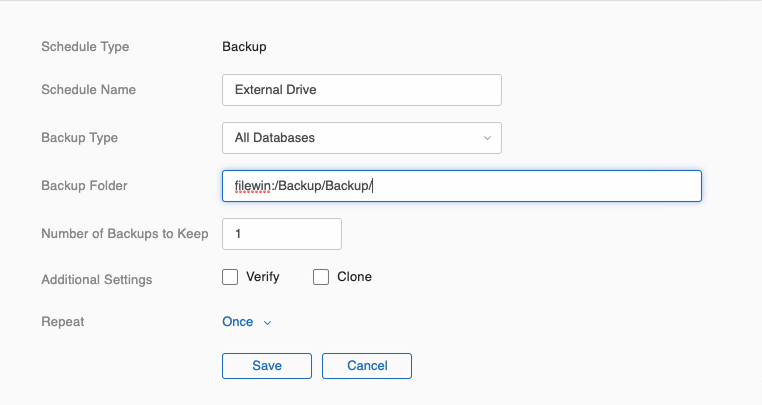
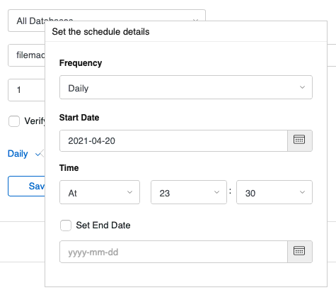
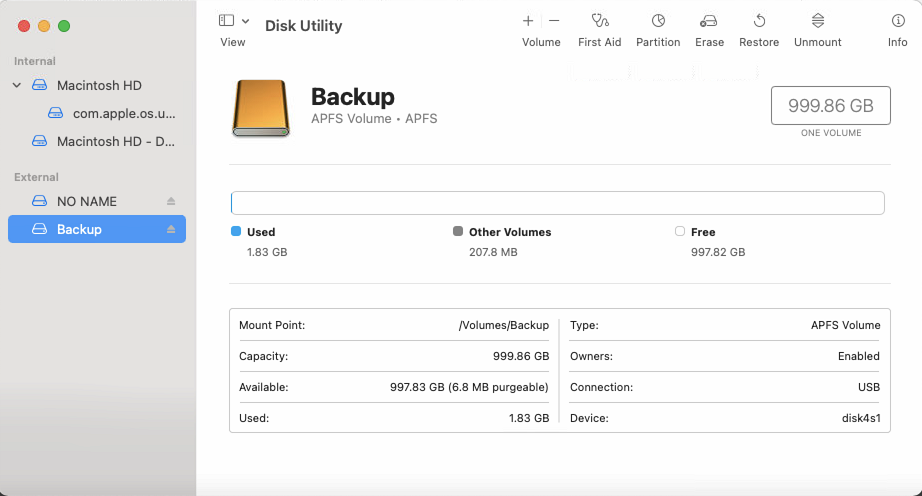
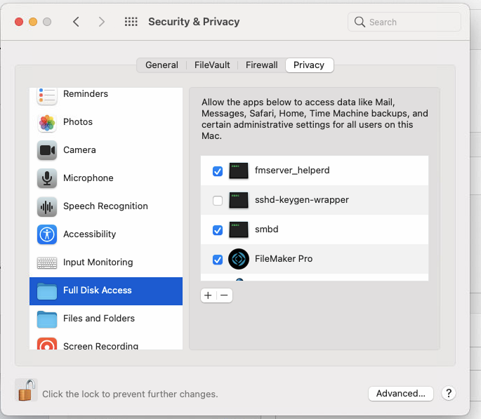
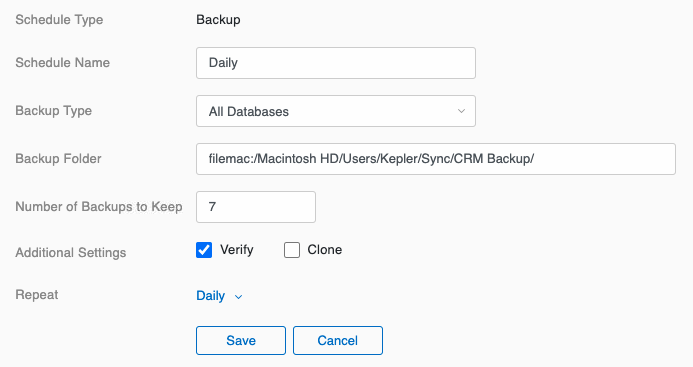

Set up External Backups
Use these steps to add and set up an External USB Drive for your FileMaker Server Backups.
Before You Begin...
These steps are very important to keep your FrameReady in good, working order.
If you must use a third-party backup solution...
-
then you must also exclude the FrameReady folder from all backups it makes. Failing to do so will likely result in damaged database files, lost or conflicting data.
If you are using Time Machine on your Mac...
-
then you must exclude the FrameReady folder from all backups it makes. Failing to do so will likely result in damaged database files, lost or conflicting data.
If you are using Anti-Virus software on your computer...
-
then you must also exclude the FrameReady folder from its scanning activity. Failing to do so will likely result in damaged database files, lost or conflicting data.
In conclusion...
-
Use the built-in backup feature in the FileMaker Server Admin Console to backup the FrameReady folder.
-
Do not allow other backup software to backup the live FrameReady folder.
How to Set up an External USB drive if you are using a Windows Server
-
Make sure the drive is formatted for FAT-32 (typically Windows formatting).
-
If you are are creating a sub-directory, then Windows automatically provides the correct privileges.
-
Open the FileMaker Server Admin Console.
-
Open the Backups tab and create a schedule similar to the one below, where the external drive is called “Backup” and there is a sub-directory in the drive called “Backup”.
The entry IS case sensitive. The path you enter must start with filewin:/ and end with a slash (/).
Path for Windows: filewin:/pathname-to-backup-folder/

-
Change the Number of Backups to Keep (assuming one per day) to a number useful to you, e.g. 7.
-
Under Additional Settings, check Verify.
-
Click Repeat and change the frequency to Daily.
Adjust the Time field to a late evening time, e.g. 23:30 (11:30pm). Click outside the schedule details window to close it. -
Click Repeat and change the frequency to Daily.
Adjust the Time field to a late evening time, e.g. 23:30 (11:30pm). Click outside the schedule details window to close it.

-
Click Save.
How to Set up an External USB drive if you are using a macOS Server
Open Disk Utility
-
Make sure the external drive is formatted as an APFS volume.
Open Disk Utility to examine the external drive.
Note that some external drives can be reformatted to APFS, while others seem unable to reformat. Consult Apple documentation for these steps.

-
Open Finder.
-
Rename the drive to External Backup and then create a Backup folder on the drive.
-
Right-click the external drive's name and choose Get Info.
-
In the Get Info window, change the privileges of the external drive. Click the “+” button to add a new user and, from the list, choose fmserver.
Confirm that the folder is owned by the user fmserver (or is in the group fmsadmin).
Confirm that the folder has read and write permissions for fmserver.
Click the Gear Icon and choose Apply to enclosed items. Doing this ensures that the Backup folder, as well as the drive, is also owned by fmserver.
Open System Preferences
-
Open System Preferences,
-
Click the Security & Privacy icon.
-
Click the Privacy tab button.
-
Under Full Disk Access, make sure the fmserver_helperd selection is checked.
If it is not listed, then click the + button and use the browse file window to locate the file:
Macintosh HD > Library > FileMaker Server > Database Server > bin > fmserver_helperd
Note: You may need to click the Padlock icon and enter your Mac OS username / password to make this change.
-
Security & Privacy window:

Open the FileMaker Server Admin Console
-
Open the FileMaker Server Admin Console.
See: Opening the FileMaker Server Admin Console -
Open the Backups tab.
-
Click Backup Schedules (lower left).

-
Click the Create Schedule button.

-
In Schedule Name, enter a name, for example Daily.
Set the Backup Type to All Databases.
In the Backup Folder field, enter the path to the backup folder. The entry IS case sensitive.
The format for paths in macOS: filemac:/volume-name/folder-name/
For example, filemac:/ExternalBackup/Backup/
Set the Number of Backups to Keep, many users are content with 7 days.
In Additional Settings, check the box to Verify.
Set the Repeat to Daily.

Make sure that the folder has permissions set correctly so that FileMaker Server can read and write to the folder.
ON macOS, the local folder must be owned by the FileMaker Server user account (fmserver) (or in the group fmsadmin). -
Change the Number of Backups to Keep (assuming one per day) to a number useful to you, e.g. 7.
-
Under Additional Settings, check Verify.
-
Click Repeat and change the frequency to Daily.
Adjust the Time field to a late evening time, e.g. 23:30 (11:30pm). Click outside the schedule details window to close it.
-
Click Save.
© 2023 Adatasol, Inc.